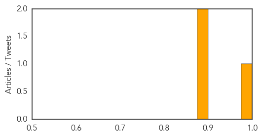
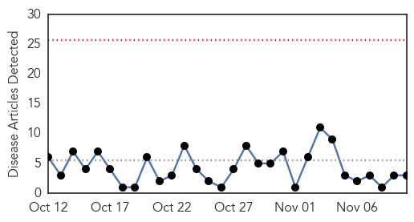
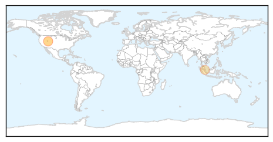
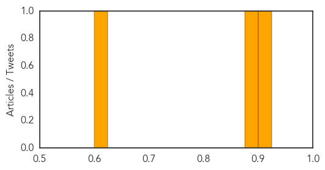

MERS
30-Day Web Trend
0 alerts, 0 warnings

30-Day Twitter Trend
4 alerts, 2 warnings

Article Locations
Article Confidences
Top Articles:
Top Tweets:
- 0.647
- AFD Blog `Saudi Arabia Announces Joint MERS Research Initiative' MERS-CoV https://t.co/XXRDyLIzOs
Hepatitis
30-Day Web Trend
0 alerts, 0 warnings

30-Day Twitter Trend
0 alerts, 0 warnings

Article Locations
Article Confidences
Top Articles:
Top Tweets:
-
No tweets found for Nov 10, 2015